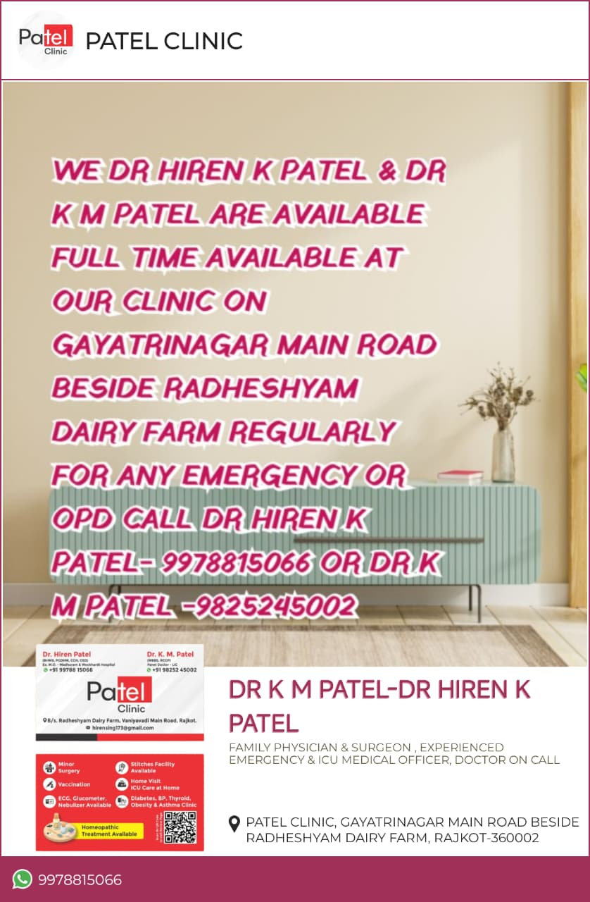

Dr. K. M. Patel
MBBS, RCGP · Family Physician
40+ years · LIC Medical Officer · 98252 45002
Full-time OPD & emergency beside Radhe Shyam Dairy Farm — opposite SBI Bank, Vaniyawadi Main Road.
40+ years · LIC Medical Officer · 98252 45002
15+ years · Wockhardt Hospital · 99788 15066
Opposite SBI Bank · beside Radhe Shyam Dairy Farm · Gayatri Nagar Main Road, Rajkot 360002
Our story
Patel Clinic has served families in Rajkot with a focus on customer satisfaction, transparency, and right guidance — not profit alone.
For over four decades, Patel Clinic has been a neighbourhood anchor in Gayatrinagar — combining general medicine and homoeopathy under one roof, with diagnostics and emergency care when families need it most.
Family Physician & Surgeon (MBBS, RCGP). Authorized Medical Officer, LIC. Panel doctor. Practising since 1981. Expert in diabetes, blood pressure, thyroid, obesity, asthma, allergy & children's diseases.
Family & Emergency Physician & Surgeon (BHMS, PGDHM, CCH, CSD). Medical Officer, Wockhardt Hospital. Ex. M.O. Madhuram Hospital. Vaccination, ECG, nebulizer, minor surgery, stitches & home visits.
Official flyer
As shown on our clinic flyer — both doctors are regularly available on Gayatri Nagar Main Road for routine visits and emergencies.

Facilities
From our business card and signage — everything listed below is available on site or on call.
Photos & branding
Storefront, logo, flyer, and business card — the same materials families see on Gayatri Nagar Main Road.
Our doctors
Full-time OPD & emergency — two physicians, one standard of excellence.
Visit us
Opposite SBI Bank, beside Radhe Shyam Dairy Farm, Gayatri Nagar Main Road, Rajkot 360002.